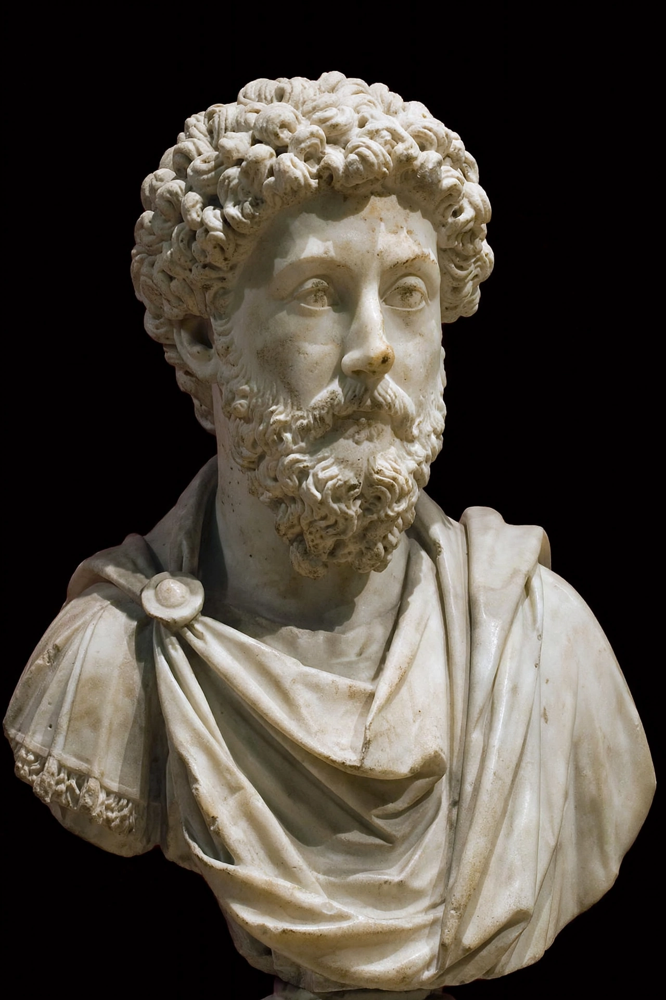

From Wikipedia, the free encyclopedia
| Stoicism | |
|---|---|
| Founder | Zeno of Citium |
| Founded | c. 300 BC, Athens |
| Key figures | Seneca, Epictetus, Marcus Aurelius, Chrysippus |
| Main ideas | Virtue as the only good; dichotomy of control; living according to nature |

Stoicism is a school of Hellenistic philosophy founded by Zeno of Citium in Athens around 300 BC, named for the Painted Porch (Stoa Poikile) where he taught. It teaches that virtue — wisdom, courage, justice and temperance — is the only true good, that destructive emotions result from errors of judgement, and that happiness (eudaimonia) comes from accepting what cannot be controlled while acting rightly on what can.
After Zeno, the school was systematised by Chrysippus and spread through the Roman world: the statesman Seneca, the freed slave Epictetus, whose Discourses and Enchiridion survive, and the emperor Marcus Aurelius, whose private notebooks became the Meditations. Stoic physics pictured a rational, providential cosmos (the logos) pervaded by divine reason; its logic and ethics shaped early Christian thought and later resurfaced in Spinoza, the Enlightenment and modern cognitive therapy.
Stoic exercises include negative visualisation (imagining loss), journaling, distinguishing what is 'up to us' from what is not, and viewing events from the perspective of the whole. A popular revival since the 2000s has drawn on Stoicism for resilience and self-help, sometimes criticised for trimming its physics and communal ethics.